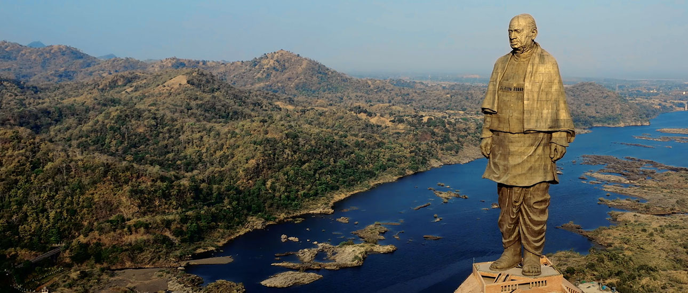
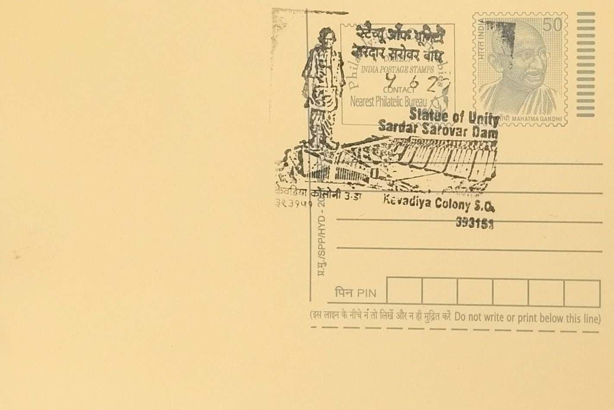
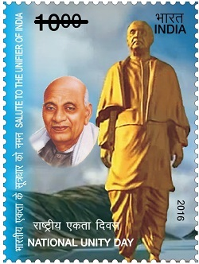

Click here to know about Sardar Sarovar Project.
The Statue of Unity, a colossal tribute to Sardar Vallabhbhai Patel, stands as a testament to India's engineering prowess and national unity. Located near the Sardar Sarovar Dam on the river Narmada in Gujarat, India, this monument is a symbol of Patel's significant role in unifying the princely states of India after independence. Its sheer scale and intricate design have made it a prominent landmark, attracting visitors from across the globe.
The statue itself reaches a height of 182 meters (597 feet), making it one of the tallest statues in the world. Its construction involved a multi-faceted approach, combining advanced engineering techniques with traditional craftsmanship. The core of the statue is built with reinforced cement concrete, steel, and brass cladding. The exterior is clad with bronze panels, meticulously assembled to create the desired aesthetic. The project’s budget was approximately ₹2,989 crore (around $420 million USD), allocated for the design, construction, and maintenance of the monument. The construction was undertaken by Larsen & Toubro, a prominent Indian construction company.
The construction of the Statue of Unity was a collaborative effort, with contributions coming from both the public and the government.
The Gujarat government played a pivotal role in initiating and funding the project. A nationwide campaign was launched to gather iron implements from farmers across India, symbolizing their contribution to the unity of the nation. This "Loha Campaign" collected thousands of tonnes of iron, which were then used in the foundation of the statue. This public participation underscored the collective sentiment behind the monument, emphasizing Patel's legacy as a unifying figure.
The Statue of Unity has significantly boosted local tourism. The surrounding area has been developed to accommodate the increasing influx of visitors, with improved infrastructure, including roads, bridges, and visitor facilities. The site offers various attractions, such as a viewing gallery within the statue, providing panoramic views of the surrounding landscape. A museum and exhibition hall showcase the life and contributions of Sardar Vallabhbhai Patel. Additionally, a sound and light show is conducted in the evening, illuminating the statue and narrating Patel's story.
Beyond the statue itself, the vicinity offers several other attractions. The Sardar Sarovar Dam, one of the largest concrete gravity dams in the world, is a major engineering marvel and a popular tourist spot. The Valley of Flowers, a garden featuring a wide variety of flora, adds to the scenic beauty of the area. The nearby Shoolpaneshwar Wildlife Sanctuary also offers opportunities for nature enthusiasts. These combined attractions have transformed the region into a comprehensive tourist destination, contributing to the local economy and promoting cultural awareness.

National Unity Day, 31.10.2016
| Date of Introduction | October 31, 2020 |
|---|---|
| Address | Sub Postmaster, |
| Kevadia Colony SO, | |
| Narmada (dt.), Gujarat - 393151. |